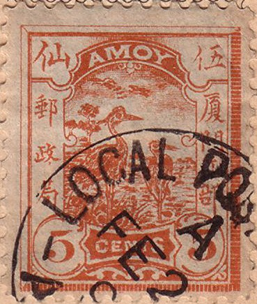
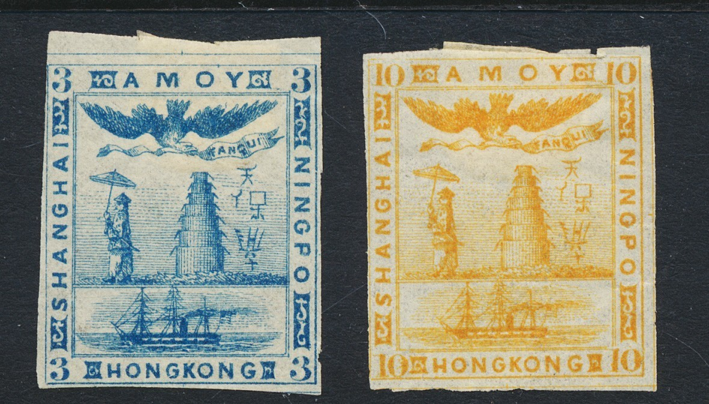
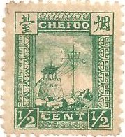
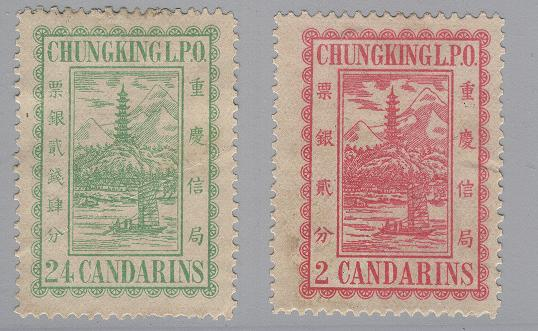
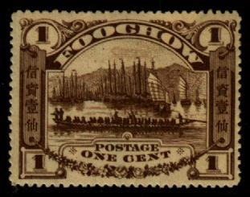

Return To Catalogue - China Local Issues, part 2 - China
Note: on my website many of the
pictures can not be seen! They are of course present in the
catalogue;
contact me if you want to purchase the catalogue.
Note that other stamps than the ones listed here may exist! China is a very interesting country from a stamp collecting point of view. Besides the normal stamps many local stamps were issued. However, it seems that most of the local stamps have never served for that purpose, but were merely issued for stamp collectors! Furthermore many countries had foreign post offices in China (Germany, Russia, France, Japan, Great Britain, Italy and the United States). The following cities issued their own stamps (all of them were ports): Hankow, Chefoo, Chungking, Kewkiang, Chinkiang, Ichang, Wuhu, Foochow, Amoy, Nanking and Wei-Hai-Wei. The stamps of Tientsin are probably bogus issues. For stamps of Shanghai, click here.
| City: | Issued stamps from: | to: | ||
| Hankow | 1893 | 1897 | ||
| Chefoo | 1893 | 1897 | ||
| Chungking | 1893 | 1897 | ||
| Kewkiang | 1894 | 1897 | ||
| Chinkiang | 1894 | 1897 | ||
| Ichang | 1894 | 1897 | ||
| Wuhu | 1894 | 1897 | ||
| Foochow | 1895 | 1897 | ||
| Amoy | 1895 | 1897 | ||
| Nanking | 1896 | 1897 | ||
| Wei-Hai-Wei | 1898 | 1899 |
Literature:
1) 'Catalogue of the Local Issues of the Treaty Ports of China'
by B.N.Lane and P. Maguire, issued by China Stamps, England, 1982
2) 'Treay Port Local Issues of China' by Ldn Agent G.F.Rowe,
Published by China Stamps SW Aus, 1957, 28 pages
(I haven't seen theses catalogues myself).
Birds
1/2 c green 1 c red 2 c blue 4 c brown 5 c red-brown 15 c black 20 c violet 25 c red Surcharged
'Half Cent' on 4 c brown 'Half Cent' on 5 c red-brown '1/2 C' on 4 c brown '1/2 C' on 5 c red-brown '3 CENTS.' (red) on 15 c black '6 CENTS' on 20 c lilac '8 CENTS' on 15 c black '10 CENTS.' on 25 red Overprinted 'POSTAGE DUE'

1/2 c green ('POSTAGE DUE' in red or black)
1 c red
2 c blue ('POSTAGE DUE' in red or black)
4 c brown ('POSTAGE DUE' in red)
5 c red-brown ('POSTAGE DUE' in red)
Some bogus stamps exist with inscription "SHANGHAI AMOY NINGPO HONGKONG":

A slightly different type, 3 c blue and 10 c yellow (engraved?).
The engraved stamps are llisted in The Philatelic Journal, Jan.15 1872 on page 2 and described there as bogus stamps. It is said that they appeared 'many years ago' and was sold 'very largely' (although they are not that common now).

1/2 c green 1 c red 2 c blue 5 c orange 10 c brown
I've seen a whole sheet of the 2 c value (40 stamps, 8 rows of 5) with "CHEFOO 1 MAR 95" cancel.
Imperforate forgeries of the 1/2 c in various colors exist, with the background clouds rather badly done:
Forgeries of the 1/2 c in various colors, reduced sizes
15 c blue and brown 20 c lilac and brown 25 c red and black
1/2 c green ('CHEFOO LOCAL POST. POST CARD.)
1 c orange ('CHEFOO LOCAL POST. LETTER CARD.)
'CHEFOO LOCAL POST NEWSPAPER WRAPPER'
Type I: no clouds in the sky
1/2 c red 1 c blue 2 c brown 4 c yellow 5 c green 6 c lilac 10 c orange Slightly different design (type II: clouds in the sky)
1/2 c red 1 c blue 2 c brown 4 c yellow 6 c lilac 10 c orange 15 c red Overprinted 'POSTAGE DUE'


1/2 c red (type I or II) 1 c blue (type I) 2 c brown (type I) 4 c yellow (type I) 5 c green (type I, I've seen an inverted overprint) 6 c lilac (type I) 10 c orange (type I) Overprinted 'SERVICE' 1/2 c red (type II) 2 c brown (type II) 4 c yellow (type II) 5 c green (type II) 6 c lilac (type II) 10 c orange (type II) Inscription 'Postage due'

1/2 c red 1 c blue 4 c yellow 5 c green (misspelt 'FIVR') 6 c lilac 10 c orange 15 c red Inscription 'POSTAGE DUE' and surcharged

'FIVE CENTS' (in red) on 5 c green
Forgeries of the 1 c in different colors, reduced sizes

(Reduced view)
2 c red 4 c blue 8 c orange 16 c lilac 24 c green Overprinted 'POSTAGE DUE'
2 c red 4 c blue 16 c lilac
I've seen forged inverted 'POSTAGE DUE' overprints.
Different type:


2 c red, next to it the same stamp with a red chinese
overprint(?)

(Reduced size)
1/2 c blue 1/2 c yellow (1896) 1 c green 1 c brown (1896) 2 c orange 5 c blue 6 c red 10 c green 15 c brown 20 c lilac 40 c brown Postcards in the same design
Postcard
1/2 c brown
Probably a bogus issue resembling one of the first stamps of
China (jonk of the 1894 issue), but with inscription 'FOOCHOW.'
(reduced size).
2 c lilac on yellow 2 c lilac 5 c green on yellow 10 c red on lilac Overprinted 'Postage due'

2 c lilac 5 c green on yellow 10 c red on lilac

2 c green 5 c brown 10 c blue Surcharged

'1.ONE CENT 1.' on 10 c blue


10 c red (building) 20 c lilac (temple) 20 c blue 30 c red Overprinted 'POSTAGE DUE'

10 c red 20 c lilac 30 c red

20 c red 30 c violet Surcharged

'ONE CENT' on 30 c violet '2. TWO CENTS 2.' on 20 c red '5. FIVE CENTS 5.' on 30 c violet
For more local issues of China click here.


{kind=link}
{kind=link}
{kind=link}
{kind=link}
{kind=link}
{kind=link}